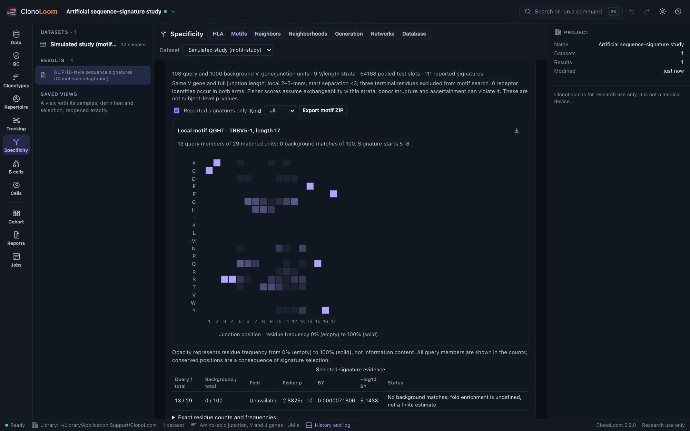
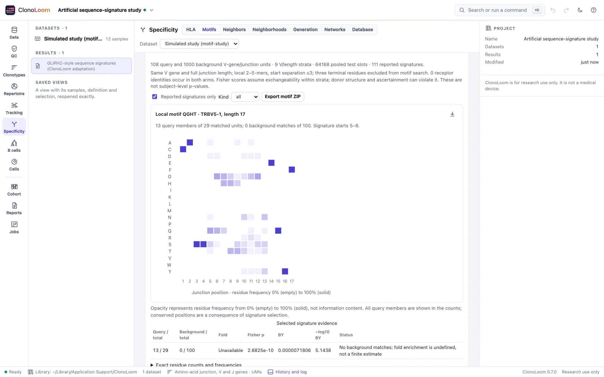

Motifs and sequence signatures
Find sequence patterns that a chosen background does not explain. These overlapping groups are hypotheses to investigate, not proof that their receptors recognize the same antigen.
Choose the query and background
- Open one receptor dataset containing the intended query and background samples. Use an amino-acid clonotype definition retaining V genes or alleles, with the intended QC rules.
- Open Specificity → Motifs. Expand Query, background and reporting settings and assign each sample to query, background or excluded. Both arms must be explicit and disjoint.
- Declare the motif lengths and reporting settings before inspecting outcomes. Select Screen motifs.
- Inspect reported groups, their matched denominators, full member lists, exclusions and scientific methods. Uncheck Reported signatures only to inspect the complete family.
Eligible clonotypes have exactly one retained TRB chain, a resolved TRBV gene and a standard full AIRR amino-acid junction of length 9–40. Positive observed evidence is collapsed separately in each arm by V gene plus full junction. J calls and other paired chains do not create additional motif units. Repeated rows, abundance and repeated subjects do not add membership. Subject annotations remain descriptive.
Query and background are matched within exact TRBV gene and full junction length. An unmatched stratum has no test, rather than a zero background denominator. Choose comparable species, sampling populations, assays and ascertainment. Matching V/length alone cannot make a background appropriate.
Read the sequence evidence


The residue grid shows all distinct query members of the selected group. Rows are amino acids; columns are one-based full-junction positions. Opacity uses the same 0–100% frequency scale for every position and group. Hover a cell for its exact count and denominator. This is a frequency plot, not an information-content logo. Conserved positions result from selecting the signature; they are not independent evidence of specificity.
Member tables show sample/subject sets and descriptive abundance. Signature tables show query and background membership over their complete matched-stratum totals. No background matches gives an undefined fold, explicitly labeled; it does not produce a finite fold estimate. Exports contain every signature and receptor, including rows outside the visible page.
What “GLIPH2-style” means here
This is a documented ClonoLoom adaptation of published GLIPH2 ideas, not the GLIPH2 implementation, pipeline or composite score. The first three and last three full-junction residues are excluded from local search and possible global substitutions.
- Local: contiguous 2–5-mers in fixed windows of up to four possible starting positions (maximum start separation three). Each receptor counts once per signature. Windows overlap; positions are not chained transitively. Requiring exact V gene and full length for local groups is an additional restriction.
- Global: the complete junction agrees except at one common central position. Allowed residues form maximal sets whose distinct pairs all have BLOSUM62 >0. Strict positivity and pairwise sets make the rule explicit; an incompatible A/C pair cannot join through B.
- Scores: one-sided Fisher enrichment within each V/length stratum, followed by Benjamini–Yekutieli correction across every pooled signature. The displayed score is −log10(BY), not a probability of shared specificity.
- Omitted: N/P-region boosts, composite GLIPH2 scores, HLA tests, clonal-expansion scores, antigen assignment and experimental validation.
Selection and scientific limits
The full signature family is constructed from the pooled query/background before using arm labels. It includes background-only signatures, overlapping windows, local/global groups and untestable strata. Reporting thresholds (default ≥3 query members, BY≤0.05, fold≥2) do not shrink it; zero-background matches can pass while their fold remains unavailable.
Fisher p-values assume exchangeable sequence units within each stratum. Related receptors, donor structure, deduplication, shared identities, unequal repertoire sampling and background ascertainment can violate this assumption. These are not independent-subject tests. BY accommodates dependence between valid tests; it cannot repair invalid p-values or selecting backgrounds, settings and samples after viewing outcomes. No biological false-discovery guarantee or antigen-specificity conclusion follows.
Use independent repertoires and experimental evidence to evaluate hypotheses. Groups overlap; do not merge them into a single specificity claim. The bounded implementation accepts at most 256 source samples, 4000 total distinct arm units, 100,000 signatures and 20 million conservatively counted exact-tail support points. It refuses larger jobs rather than truncating the family.
Keep and reproduce the screen
Saved results retain query/background selections, captured receptors, source fingerprints and terms, definition/QC, abundance units, subject annotations, exclusions, all scores and method citations. Reopening, replay and ZIP export can use this evidence without the original sources. Export motif ZIP includes JSON, manifest, complete signatures and receptor CSVs, and NOTICE. Figure captions retain the selection, denominators, correction family and limits.
Try Query and background motif study from Examples: S01–S04 are query; S05–S12 are background. The default seed supplies 108 unique query and 1000 background V/junction units. Source rows and full planted truth are available for inspection. Remote clients use screen_motifs.
To inspect observed recurrence across named human subjects and a declared HLA panel, continue to Subject recurrence and HLA. Its independent-subject test and typing universe are separate from this sequence-level screen.
Method sources
- Huang et al. (2020). GLIPH2 and genome-wide antigen screening. Published global/local signature inspiration; adaptations are stated above.
- Henikoff & Henikoff (1992). Amino acid substitution matrices from protein blocks. BLOSUM62 data.
- Fisher (1922). On the interpretation of χ² from contingency tables, and the calculation of P. Conditional exact test.
- Benjamini & Yekutieli (2001). False discovery rate under dependency.